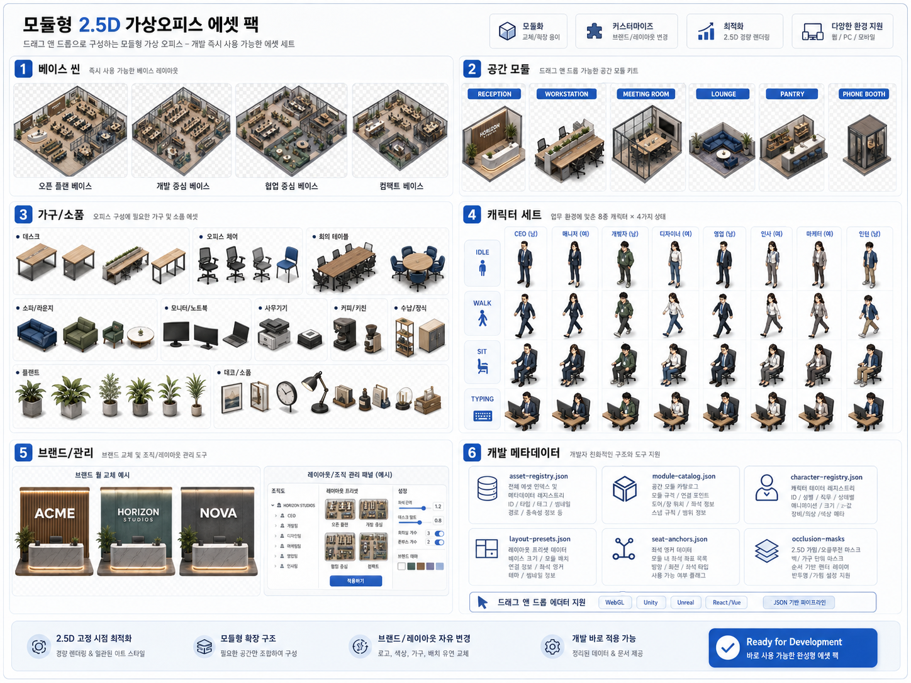

목표 스타일 = 이 시안의 렌더 질감. 포토리얼 계열 아이소메트릭 3D 렌더 — 라이트 오크 우드,
네이비 패브릭, 웜그레이 벽, 소프트 데이라이트(좌상), 앰비언트 오클루전, PBR 재질(우드그레인·패브릭·프로스트 유리).
팔레트: wood #CDA97E ·
navy #33415E ·
floor #E6E1D7 ·
bg #EDEAE3 ·
accent #2E7BFF.
카메라는 반드시 2:1 다이메트릭(아이소), 원근 왜곡 없음.